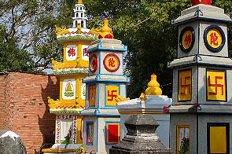

ChuaGiacLam/T.P.HoChiMinh
覚林寺/ホーチミン
お次は市内最古の寺、覚林寺。
雑多な大通りから一本入ったところに六角七重のパゴダが建っている。ここは上に登れる。
各階には昨日つくったばっかりなのでは、と思えるような素敵なぴかぴか仏が中央に鎮座している。
最上階からはホーチミンの街が見わたせる。無数のバイクが行き交い、中心部には高層ビルもちらほら見られる。こうして見るとホーチミンは大きな街だ。人口は700万人ともいわれており、大阪やシンガポール、バンコクに匹敵する大都会だ。しかし7階程登っただけでちょっと遠くにはジャングルも見えてくるところがホーチミンのチャームポイントだ。
覚林寺は歴史のある寺だけに敷地が比較的広い。といっても精々日本の地方都市のチョット大きめのお寺といった位だが。
塔から100メートル程奥にいくと本堂がある。入口の門はペイント中。赤と黄色の組み合わせがよろしい。
本堂は瓦屋根の比較的オーソドックスな造り。1744年に造られた建物だそうだ。棟飾りが中国の道教寺院風である。
しかし手前の手摺はヨーロピア〜ン。
内部はさすが老舗の寺院、古い仏像がずらりと並んでいる。これは十王像だったか。ピカピカしている像もフィギュアみたいでいい感じだが、日本人の眼からみるとやっぱり古い仏像があると落ち着く。いつも日本で古い仏像ばかりを見ているとペンキ塗りの仏像がフレッシュに見えるがここベトナムではそんなペンキ塗りニス仕上げの仏像ばかり見て来たものだから逆に古びて埃と煤で汚れた仏像がカッコよく見える。ま、程度問題ということですな。

柱や本尊もなかなか良い具合に黒ずんでいる。しかし光背はネオン電飾。
堂内は丁度昼時で参拝客が大勢座り込んでいた。恐らく一拝みした後、皆で精進料理を食べようという事なのだろう。
本堂は正面に参拝スペース。本尊の裏手には食堂があって昼食の用意がされていた。
参拝客は何故か女性、というかお婆ちゃんばかり。尼寺なのだろうか？
気のあった人同士で参拝してヘルシーなランチを食す、ってここはベトナム版巣鴨の地蔵様か？
本堂の隅には物凄くかっこいいランプスタンド。
電球一個に一体仏像が付いている。スタンドのアンティーク具合からすると元々はロウソクを灯していたと思われる。
くうう〜堪らん、カッコいいぞ〜。欲しい〜！
本堂の裏手の食堂の一画にあった位牌堂的スペース。ベトナムの位牌は赤金で写真入り。その他亡くなった方々の写真が壁面を埋めていた。
御冥福をお祈りしつつ、本堂を出た。

本堂の脇には住職の墓なのだろうか、カラフルな小パゴダが幾つも並んでいた。
境内の一部は公園のようになっており何故か若人達が大勢ベンチに腰掛けていて、みんな受験勉強をしていた。
お寺で受験勉強、渋すぎる。そういえばさっきいった越南国寺でも娘さんが受験勉強をしていた。
ホーチミンで寺といったら受験勉強スポットなのだろうか。
大いなる謎を残しつつ寺を後にしたのであった。
次へ行きましょう
越南珍寺劇場
珍寺大道場 HOME